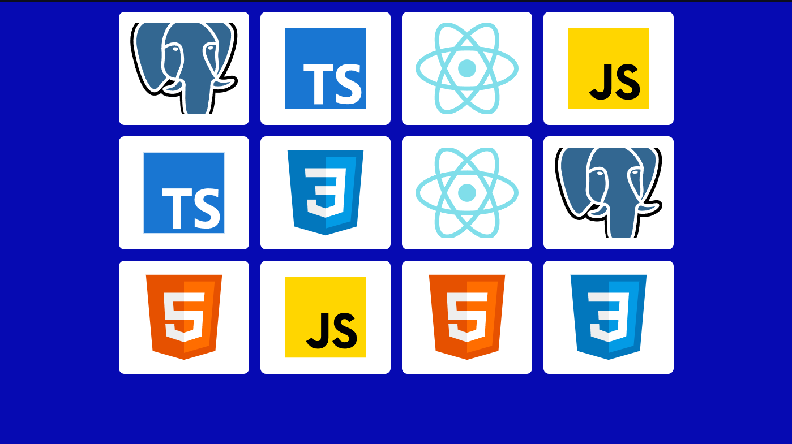
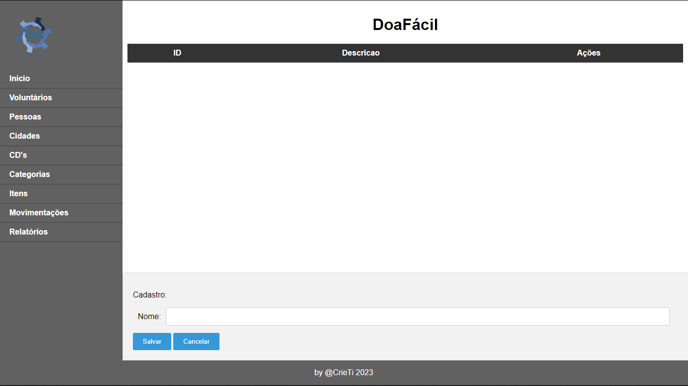

Take a closer look at the projects I've worked on to see the challenges I've tackled and the creative solutions I've come up with. These insights highlight my expertise and thorough approach in handling different tasks. It's a glimpse into the variety and complexity of my contributions.
At CRIE_TI, I built a project mimicking Netflix using only HTML and CSS. This hands-on experience showcases my web development skills and creativity in a real-world context.
At CRIE_TI, I created a Memory game project employing HTML, JavaScript, and CSS. This hands-on endeavor offers a glimpse into my front-end expertise, particularly with JavaScript. 
At CRIE_TI, I gained valuable experience working collaboratively in a group setting, as exemplified by a project I co-created with a friend. This particular endeavor not only demonstrates our teamwork but also showcases the full-stack capabilities mentioned earlier. Through effective collaboration, underscoring my proficiency in both front-end and back-end development.